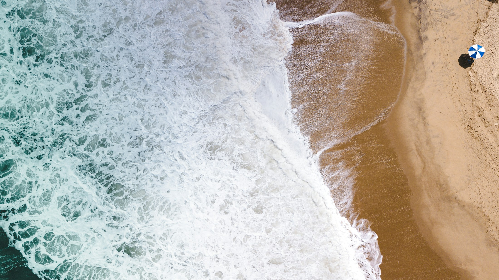

LITORAL NORTE
São Sebastião
Praias, aula de surf, trilhas e passeios para viver o litoral como uma experiência Rud.
INVESTIMENTOSob atualização
Quero saber mais →A EXPERIÊNCIA
Mais que uma praia: um jeito de viver o litoral.
Uma experiência para alternar mar, natureza e movimento: praias, aula de surf, trilhas e passeios escolhidos para o grupo e para a época da viagem.
Roteiro previsto
Praias do Litoral Norte, experiência de surf, trilha e passeios de natureza. A programação final será divulgada com a saída confirmada.
O que a proposta incluirá
- Hospedagem e deslocamentos definidos
- Experiência de surf e passeios contratados
- Orientação antes e durante a viagem
- Seguro viagem opcional
Condições
Datas, duração, inclusões e investimento serão atualizados assim que a próxima saída estiver confirmada.
Quero ser avisado sobre São Sebastião.
Quero receber novidades →IMAGEM PROVISÓRIA
O clima do Litoral Norte
